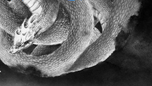
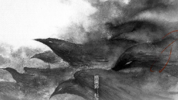

警世录-拯救你的危地
这期警世录，我们来聊聊办公安全这件事儿。在网络时代，办公安全是一个不可忽视的问题。你见或不见，它就在那里，决不可掉以轻心。

Office最新漏洞被利用，快用管家打
近日，腾讯电脑管家监测发现到一个新的office文档病毒样本，病毒主要的攻击对象包含外贸工作从业者，攻击者给用户发送钓鱼邮件，然后附带利用漏洞构造的order.doc文档，诱惑被攻击用户打开。而一旦不小心打开该文档，就会触发漏洞，被种植上远控木马，导致隐私信息的泄漏。目前，腾讯电脑管家可以对该漏洞攻击方式拦截，广大用户及时修复漏洞补丁并开启电脑管家进行实时防护，可以有效抵御病毒攻击。

Office警世录-漏洞不补，危机四伏
刚刚过去的两个月，网络世界危机不断，“WannaCry”、“Petya”两次勒索病毒接连爆发，上百万台电脑被感染，造成数十亿美元损失，金融，能源，医疗等众多行业被影响。两起间隔如此之近又影响如此之深的网络安全事件，让我们不禁想要知道这危机的源头。黑客猖獗，病毒肆虐，所有的矛头指向同一个方向——漏洞。
“驱动人生木马”防治指南
12月14日下午，腾讯电脑管家监测发现，一款通过“驱动人生”升级通道，并同时利用“永恒之蓝”高危漏洞传播的木马突然爆发，仅2个小时受攻击用户就高达10万。腾讯电脑管家可精准拦截该病毒攻击，管家团队也将持续跟踪该款病毒并同步相关信息。
安全网购，我有绝招
下载购物清单遭中毒、点击链接被盗号、骚扰弹窗无休止、支付安全有风险，这些与网购相关的坑，四大买家带你一一击破！
企鹅守护——净化孩子上网环境
腾讯电脑管家推出全新儿童守护功能——企鹅守护，净化孩子上网环境，守护孩子健康成长。
上网一不留意，电脑秒变矿机
什么是挖矿木马？在你毫无察觉的情况下，在你的电脑里植入进行挖矿的程序称为“挖矿木马”。挖矿木马最早出现于2013年，2017年挖矿木马攻击事件数量呈现出爆发式的增长。虚拟数字货币交易的火爆，使得大量黑产从业人员进入挖矿产业。
万万没想到，病毒是我自己放进来的
腾讯电脑管家检测到电脑可能存在木马或病毒入侵等风险时会弹出提示弹窗，很多用户在特定场景下会“放行”病毒，从而导致电脑中毒。腾讯电脑管家希望用户重视电脑管家安全提示，防止病毒木马的入侵，全面保护电脑安全。
第23次斩获AV-C评测A+评级
近日，全球最权威的杀毒评测机构AV-Comparatives（以下简称"AVC"）公布了最新一期安全软件真实世界测试报告。结果显示，继上半年性能测试获得A+评级后，腾讯电脑管家（英文版）又以检测率99.5%的成绩获得真实世界测试“最佳（A+）”的评级，持续领跑世界杀软第一阵营。至此，腾讯电脑管家已23次斩获A+评级。
文档守护者3.0上线，让你青春回忆，
电脑管家文档守护者3.0上线，误删文档找回，文档历史版本找回，系统崩溃后找回桌面文件，特殊文件格式被添加后缀也可被保护。底层防护能力升级，有效对抗破坏MBRVBRMFT的恶意程序，防御勒索病毒，全面保护文档安全。